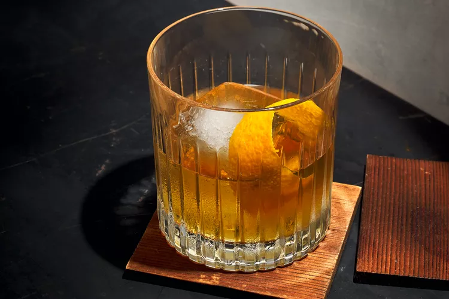

8. Mr. J
A classic of classics, the drink contains whiskey and is considered one of the first cocktails in history - hence its name.

Bold, smooth, and easy to sip, this fireside-ready cocktail from Irish
mixologist Ariel Sanecki blends port-finished Scotch with coffee and chocolate.
Ingredients
1 1/2 ounces port-finished Scotch
- Such as Glenmorangie Quinta Ruban
1 ounce sweet vermouth
1/3 ounce Benedictine liqueur
5 dashes chocolate bitters
10 coffee beans
Orange peel strip
How to prepare
Step 1
- Combine Scotch, vermouth, Benedictine liqueur, bitters, and coffee beans in a mixing glass. Add ice, and stir 30 seconds.
Step 2
- Strain over a large ice cube into a rocks glass. Garnish with an orange peel strip.
Helpful Tips
Port-Finished Scotch
- The use of port-finished Scotch contributes to the cocktail's bold and smooth flavor profile.
Coffee Bean Infusion
- The coffee beans are an ingredient that is stirred into the mixture, infusing the cocktail with their aroma and flavor.
Large Ice Cube
- A large ice cube is ideal for chilling the drink without over-diluting it quickly.
Orange Peel Garnish
- Gently twist the orange peel over the drink to express its oils onto the surface before dropping it in.
Enjoy your Mr J. Cocktail!